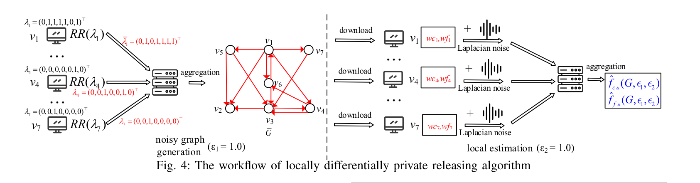

Privacy-preserving Triangle Counting in Directed Graphs
IEEE ICDE 2025

Abstract
Triangle counting is an important graph analytic task used in applications such as social-network analysis and fraud detection, but directly collecting graph edges may reveal sensitive relationships. We study triangle counting under local differential privacy and show that existing approaches incur large errors on directed graphs due to heavy perturbation noise. We propose new estimators and protocol designs tailored to directed triangle structures, together with debiasing techniques to reduce estimation variance. Theoretical analysis and experiments demonstrate that our method achieves substantially better utility than prior LDP baselines.
Resources
Citation
@inproceedings{WLZJG25,
author = {Ziyao Wei and Qing Liu and Zhikun Zhang and Shouling Ji and Yunjun Gao},
title = {{Privacy-preserving Triangle Counting in Directed Graphs}},
booktitle = {{ICDE}},
publisher = {IEEE},
year = {2025},
}